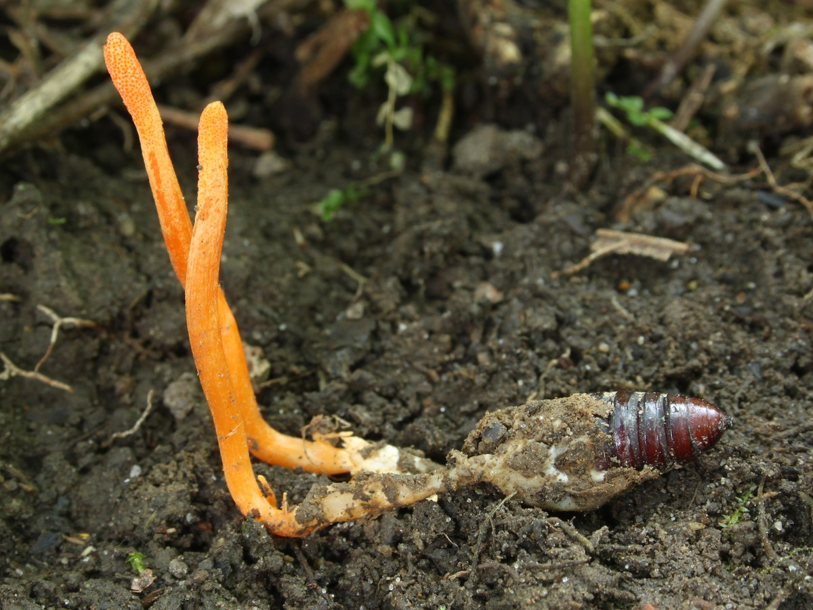

Actividad 1 · Ruta de 12 preguntas
El ciclo de vida y la reproducción
Modelo: Cordyceps militaris, familia Cordycipitaceae. Responde una pregunta a la vez, elige una opción y justifica tu elección. Cada respuesta se comprueba al instante y, al terminar la pregunta 12, la actividad se cierra con tu puntaje y un resumen descargable.
Cargando pregunta…
Actividad 2 · Rutas reproductivas
Dos rutas reproductivas del hongo
Modelo: Cordyceps militaris, familia Cordycipitaceae. El hongo no elige de forma consciente entre reproducción sexual y asexual: ambas rutas forman parte de su ciclo. Lee cada escenario, elige una ruta y justifica cómo se relaciona con la evidencia. No hay una estrategia mejor en abstracto.
Cargando escenario…
Actividad 3 · Disección guiada
¿Por qué existe cada estructura?
Modelo: Cordyceps militaris, familia Cordycipitaceae. Selecciona una estructura de la fotografía, identifica su función y relaciónala con la fase del ciclo. Debes completar las cuatro estructuras para cerrar la actividad.
Pupa parasitada
Toca los númerosSelecciona un número sobre la fotografía o una tarjeta de la derecha. El punto elegido se resalta.

Esquema de apoyo
Ficha de disección
0 de 4 completadasElige una estructura para comenzar. Cada ficha tiene dos elecciones: la función y la fase del ciclo.
1. ¿Qué función cumple?
2. ¿Con qué proceso se relaciona?
Actividad 4 · Consulta
Glosario científico y fuentes
Glosario del modelo Cordyceps militaris (familia Cordycipitaceae). Treinta y tres términos para leer, comparar y usar en tus justificaciones. Busca una palabra o filtra por categoría.
Marco científico
Ideas fuerzaMito vs. realidad
Pensamiento críticoFuentes y lecturas recomendadas
EvidenciaLas referencias se incluyen para el docente y para quienes quieran profundizar. Las actividades son una síntesis educativa: no sustituyen la lectura de los artículos originales.